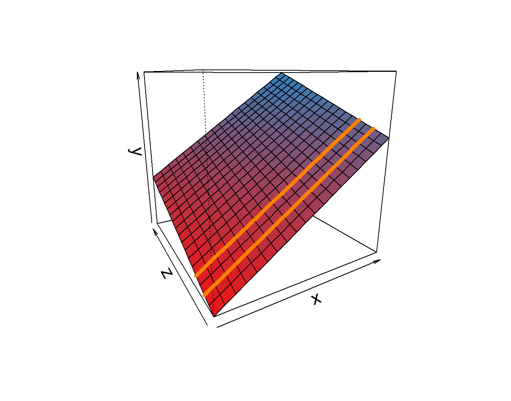
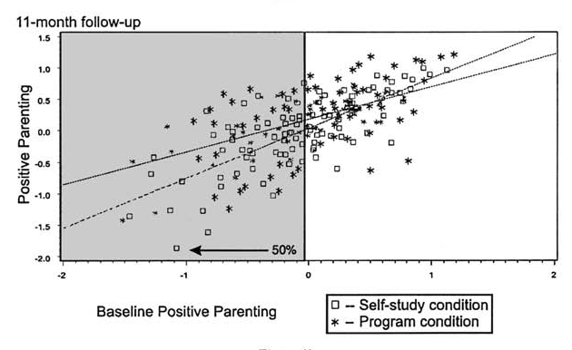
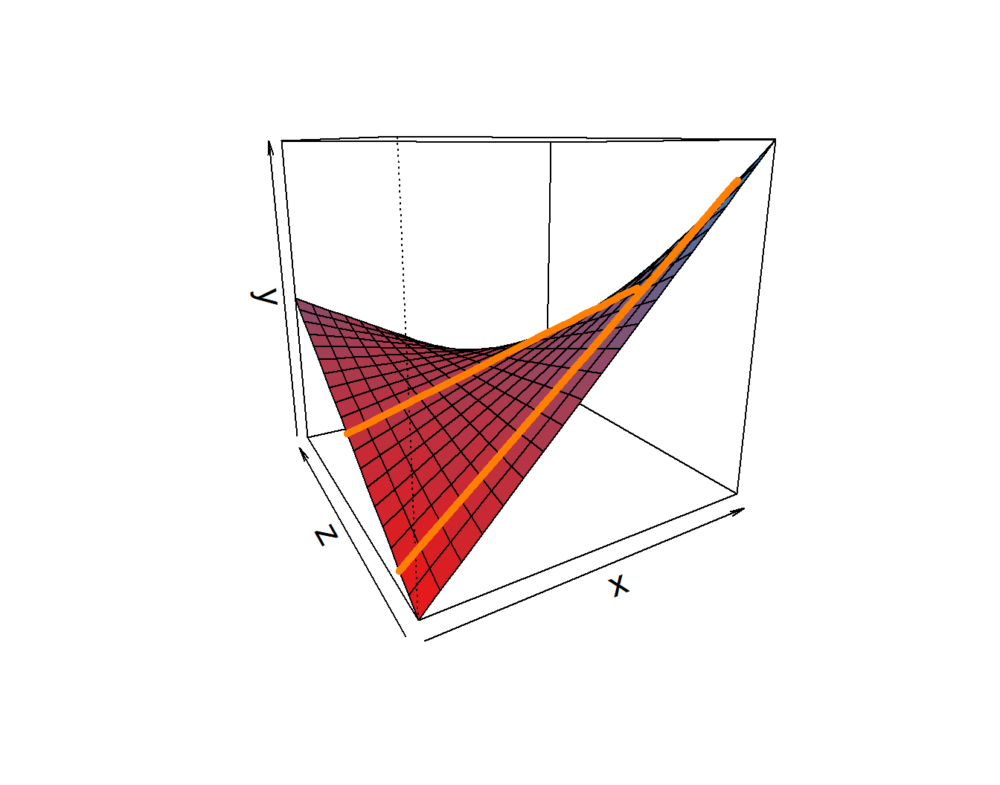
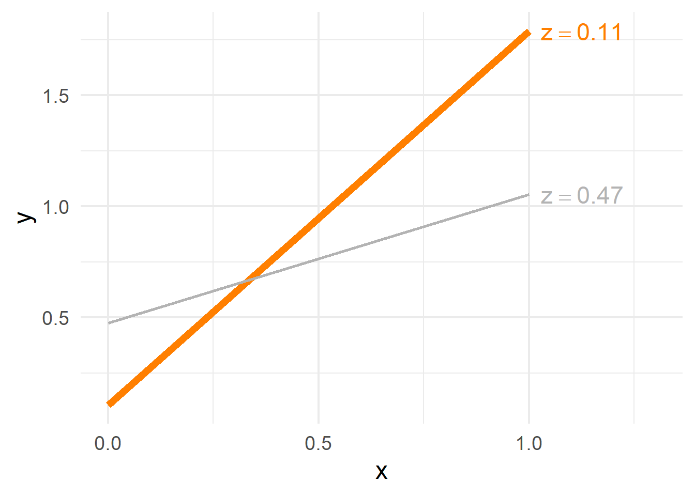
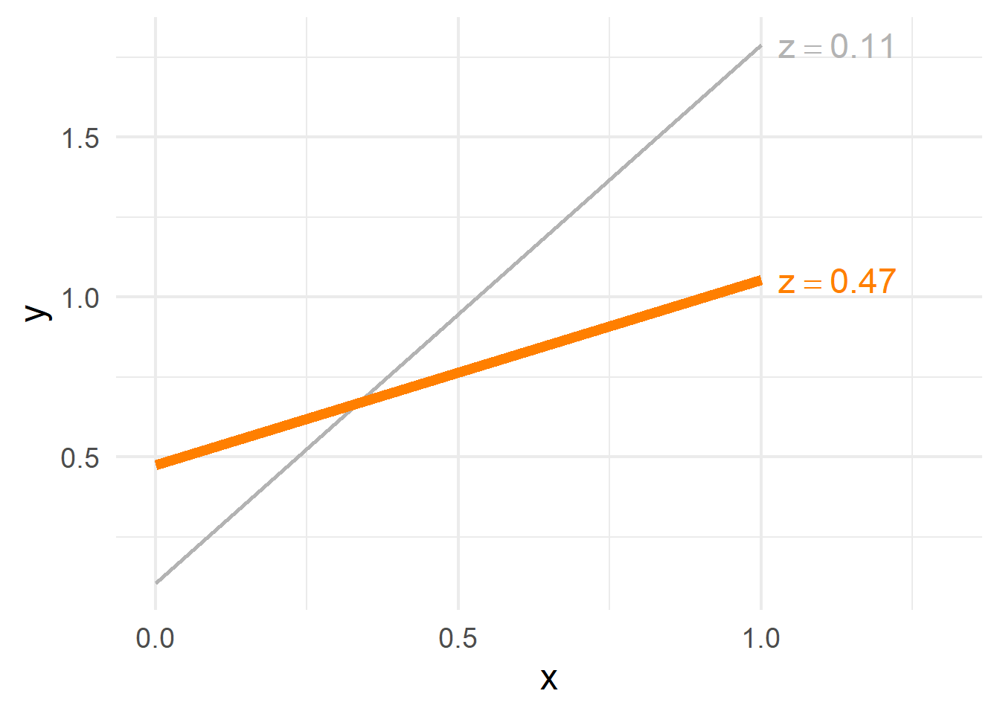
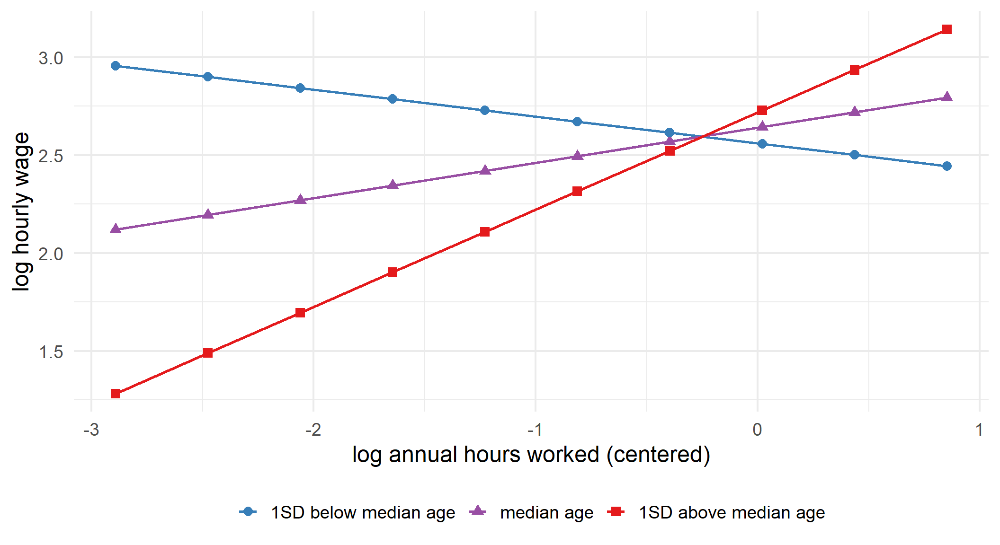
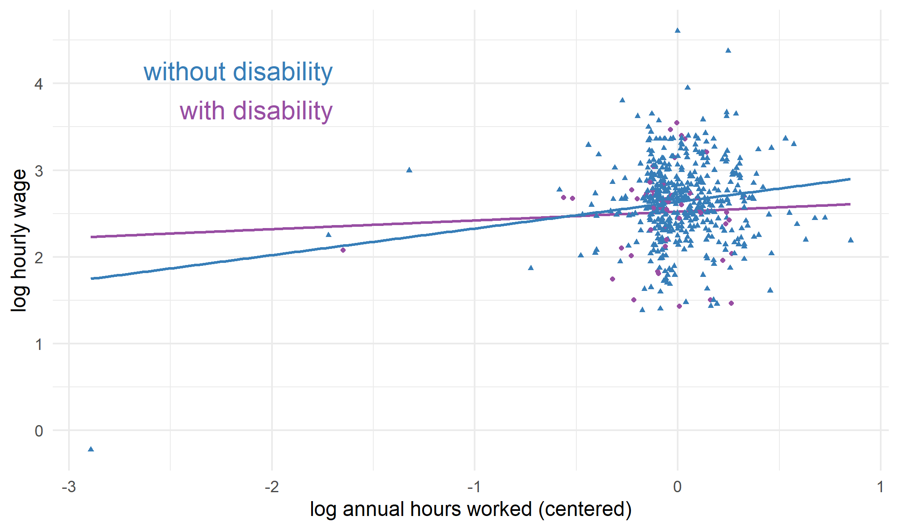

“Main” Effects
If there was a meaningful interaction, how would we interpret the main effects?
- Disability:
- Log hours worked:
Types of relationships a third variable (\(z\)) can have with a DV (\(y\)) and IV (\(x\)):
Confounder
\(z\) is related to both \(x\) and \(y\)
The relationship between \(x\) and \(y\) changes when accounting for \(z\)
Suppressor
Distorter
\(z\) changes the sign of the relationship between \(x\) and \(y\)
\(z\) changes a zero relationship between \(x\) and \(y\) to a nonzero relationship
Moderator (This lecture)
Mediator
\(x\) causes \(y\)
\(z\) is intermediate in the causal process
Definition:
Prevalence of moderation effects:
Moderation and interaction:
One option: explore the moderation between the treatment effect (e.g., treatment group and control group) and the pre-treatment (baseline) individual difference variables on outcome variable
Through investigating the moderation effect, we can infer who will benefit from the treatment program most, and under what circumstances
Kraemer, H. C., Wilson, G. T., Fairburn, C. G., & Agras, W. S. (2002). Mediators and moderators of treatment effects in randomized clinical trials. Archives of General Psychiatry, 59, 877–883.

Program leads to higher positive parenting than self-study on the shaded side
Self-study leads to higher positive parenting than the program on the unshaded side
Sandler, I. N., Ayers, T. S., Wolchik, S. A., Telin, J. Y., Kwok, O. M., Haine, R. A., …, & Griffin, W. A. (2003). The family bereavement program: Efficacy evaluation of a theory-based prevention program for parentally bereaved children and adolescents. Journal of Consulting and Clinical Psychology, 71, 587–600.
Moderation model:
\[\hat{y} = b_0 + b_1x + b_2z + b_3(xz)\]
\(y\): criterion/dependent variable
\(x\): predictor/independent variable
\(z\): moderator
\(xz\): moderation term of \(x\) and \(z\) (= product of \(x\) and \(z\))
This is a linear-by-linear moderation model
Regression of \(y\) on \(x\) is linear at every value of \(z\)
Regression of \(y\) on \(z\) is linear at every value of \(x\)
Regression surface with no interaction

Regression lines of \(y\) on \(x\) are linear and parallel across values of \(z\)
Regression surface with interaction

Regression lines of \(y\) on \(x\) are linear but not parallel across values of \(z\)


Regression lines of \(y\) on \(x\) are linear but not parallel across values of \(z\)
Moderation model:
\[\hat{y} = b_0 + b_1x + b_2z + b_3 (xz)\]
Interpretations when \(x\) and \(z\) are uncentered (no need to center \(y\)):
Centered Moderation model:
\[\hat{y} = b_0 + b_1(x - \bar{x}) + b_2(z - \bar{z}) + b_3 [(x - \bar{x})(z - \bar{z})]\]
Interpretations when \(x\) and \(z\) are centered:
Centering the predictors \(x\) and \(z\) yields meaningful interpretations for the lower-order coefficients \(b_0\), \(b_1\), \(b_2\)
If predictors are continuous, it recommended to always center the predictors in moderation analysis
If predictors are categorical, not necessary to center (more on this later)
Example: wage data for men in 1988
lnhr: log hours worked annually
lnwg: log hourly wage in U.S. dollars
ageh: age of the man
agesq: squared age of the man
disab: dummy variable for having a disability
lnhr lnwg ageh agesq disab
Min. :4.787 Min. :-0.2231 Min. :31.00 Min. : 961 Min. :0.00000
1st Qu.:7.581 1st Qu.: 2.3604 1st Qu.:37.00 1st Qu.:1369 1st Qu.:0.00000
Median :7.656 Median : 2.6539 Median :42.00 Median :1764 Median :0.00000
Mean :7.680 Mean : 2.6257 Mean :43.43 Mean :1949 Mean :0.09774
3rd Qu.:7.804 3rd Qu.: 2.8904 3rd Qu.:50.00 3rd Qu.:2500 3rd Qu.:0.00000
Max. :8.531 Max. : 4.6050 Max. :60.00 Max. :3600 Max. :1.00000 First, we will predict wages from annual hours worked, using age as a moderator, centering both predictors:
\[\widehat{\texttt{lnwg}} = b_0 + b_1\texttt{lnhr} + b_2\texttt{ageh} + b_3\texttt{lnhr}\times \texttt{ageh}\]
Note: * in the formula means to include both main effects and interactions
Coefficients: Estimate Std. Error t value Pr(>|t|) (Intercept) 2.635443 0.019635 134.219 < 2e-16 ***lnhrC 0.180718 0.081636 2.214 0.02728 * agehC 0.007438 0.002490 2.987 0.00295 ** lnhrC:agehC 0.038939 0.007444 5.231 2.43e-07 ***Signif. codes: 0 '***' 0.001 '**' 0.01 '*' 0.05 '.' 0.1 ' ' 1Residual standard error: 0.4509 on 528 degrees of freedomMultiple R-squared: 0.08589, Adjusted R-squared: 0.08069 Moderation model (linear-by-linear moderation, \(x\) and \(z\) centered):
\[\hat{y} = b_0 + b_1x + b_2z + b_3(xz)\]
How to probe the moderation effect?
\[\hat{y} = \underbrace{(b_0 + b_2z)}_{\text{simple intercept}} + \underbrace{(b_1 + b_3z)}_{\text{simple slope}}x\]
\[\widehat{\texttt{lnwg}} = (2.64 + .01\times \texttt{ageC}) + (.18 + .04\times \texttt{ageC}) \times \texttt{lnhrC}\]
We can probe the model by plugging in particular values of \(z\) (ageC)

To run standardized moderation, feed lm standardized variables:
Call:
lm(formula = scale(lnwg) ~ scale(lnhr) * scale(ageh), data = dat)
Residuals:
Min 1Q Median 3Q Max
-2.5899 -0.5761 0.0453 0.5696 4.1960
Coefficients:
Estimate Std. Error t value Pr(>|t|)
(Intercept) 0.02070 0.04176 0.496 0.62024
scale(lnhr) 0.09817 0.04435 2.214 0.02728 *
scale(ageh) 0.12537 0.04197 2.987 0.00295 **
scale(lnhr):scale(ageh) 0.16765 0.03205 5.231 2.43e-07 ***
---
Signif. codes: 0 '***' 0.001 '**' 0.01 '*' 0.05 '.' 0.1 ' ' 1
Residual standard error: 0.9588 on 528 degrees of freedom
Multiple R-squared: 0.08589, Adjusted R-squared: 0.08069
F-statistic: 16.54 on 3 and 528 DF, p-value: 2.777e-10Suppose our moderator variable \(z\) is categorical
Different options for coding the effect:
| Category 1 | Category 2 | Centered? | |
|---|---|---|---|
| Dummy Coding | 0 | 1 | No |
| Unweighted Effects | -1 | 1 | Yes, if groups are same size |
| Weighted Effects | -5 | 1 | Yes, if weights are proportional to group size |
I.e., if there are 5x as many observations in Category 1 as 2, this weighted effects coding will be “centered”
Moderation model (\(x\) is still centered):
\[\hat{y} = b_0 + b_1x + b_2z + b_3(xz)\]
Simple regression model; linear regression of \(y\) on \(x\) at values of \(z\)
\[\hat{y} = (b_0 + b_2z) + (b_1 + b_3z)x\]
Put the two values of \(z\) into the simple regression model
RSuppose we use disability status (0 = no disability, 1 = disability) as a moderator instead of age:
For a man without a disability:
\[\widehat{\texttt{lnwg}} = 2.64 + .31\times\texttt{lnhrC}\]
For a man with a disability:
\[\begin{aligned} \widehat{\texttt{lnwg}} &= (2.64 - .11) + (.31 - .21)\times\texttt{lnhrC} \\ &= 2.52 + .10\,\texttt{lnhrC} \end{aligned}\]
In this example, the moderation effect is not significant (nor is the main effect of disability)

If there was a meaningful interaction, how would we interpret the main effects?
Because moderation analysis is a special case of multiple linear regression, power can be assessed using method covered in earlier lectures
Moderation effects are harder to estimate than main effects!
For a given size for the main effect, \(4\times N\) is needed to have an equally accurate interaction effect of the same size
\(16\times N\) is needed to have an equally accurate interaction effect of half the size
Gelman, A., Hill, J., & Vehtari, A. (2020). Regression and other stories. Cambridge University Press. p. 301
Using the continuous moderator (age) as example:
We estimated a multiple linear regression predicting log hourly wage from log annual hours worked, age, and their interaction. Both continuous predictors were mean-centered. The overall model was statistically significant, \(R^2 = .09\), adjusted \(R^2 = .08\), \(F(3, 528) = 16.54\), \(p < .001\).
Age significantly moderated the relationship between hours worked and wage, \(b = 0.039\), \(t(528) = 5.23\), \(p < .001\), 95% CI \([0.024, 0.054]\). For each additional year of age, the slope of log wage on log hours increased by 0.039. Plotting simple slopes at one standard deviation above and below the mean age indicated that the relationship between hours worked and wage was positive for older men and negative for younger men.
At the mean age, hours worked was positively related to wage, \(b = 0.181\), \(t(528) = 2.21\), \(p = .027\), 95% CI \([0.020, 0.341]\). At the mean of hours worked, age was positively related to wage, \(b = 0.007\), \(t(528) = 2.99\), \(p = .003\), 95% CI \([0.003, 0.012]\).